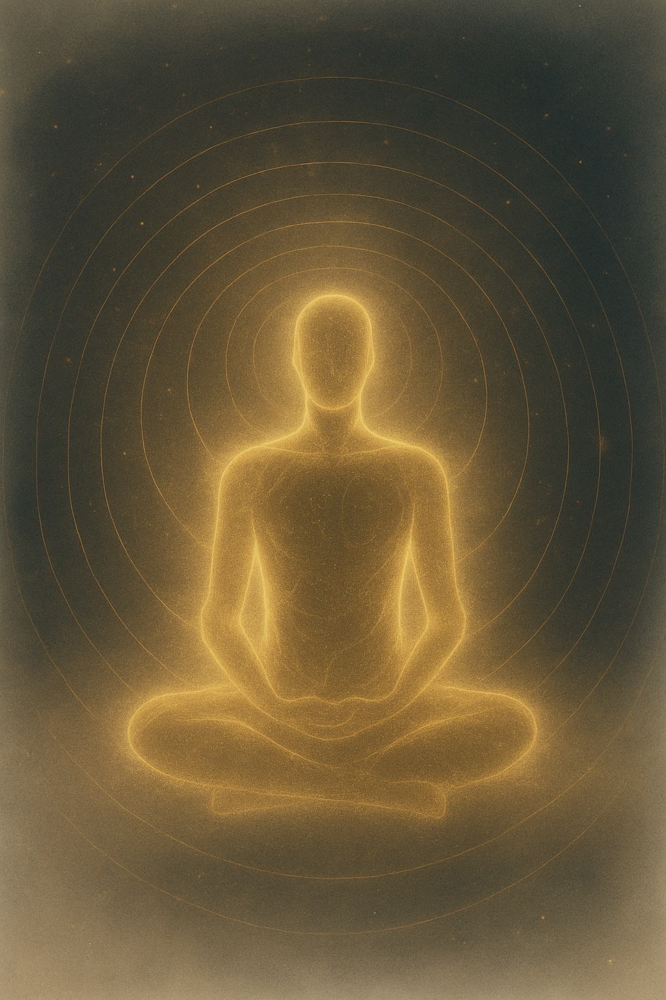

Fra idé til opplevelse
Det vokste frem gjennom livet.
Gjennom perioder med høyt tempo.
Gjennom smerte.
Gjennom sykdom.
Gjennom behovet for å finne tilbake til noe som allerede fantes.
Som om kroppen kunne finne tilbake til sin egen grunnstemning.
